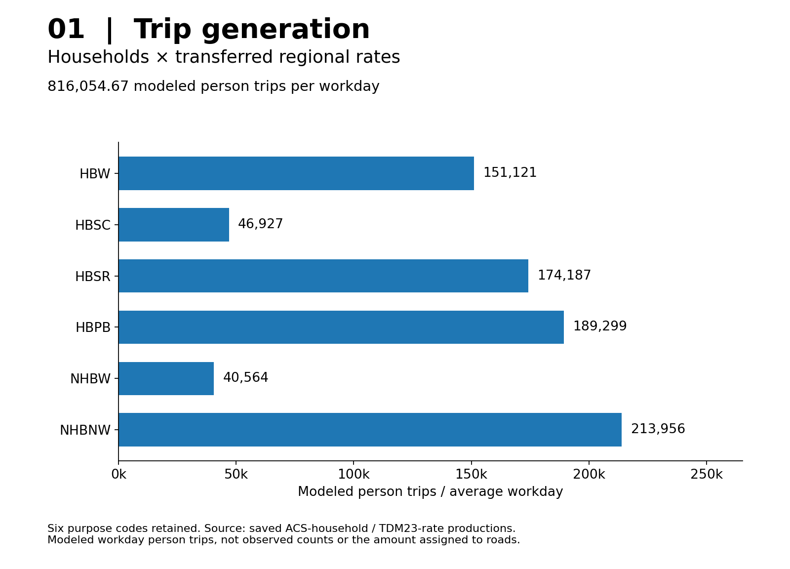
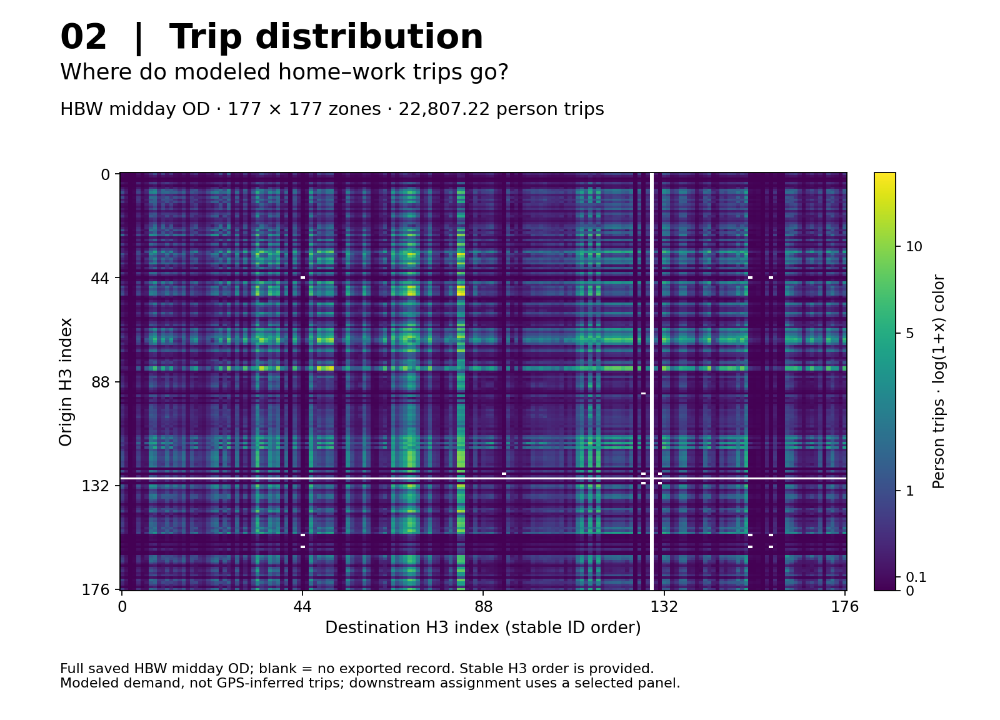
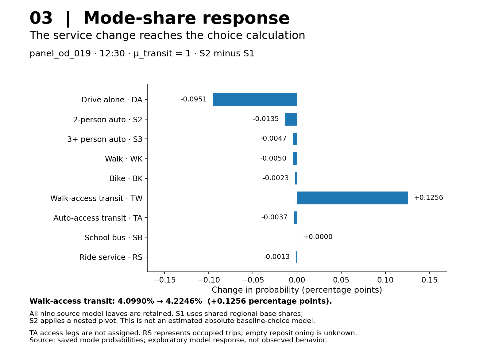

01 · Trip Generation
Households become trip productions.
Area-allocated ACS households × transferred regional rates, with activity-based attraction weights.
816,054.67 modeled workday person trips

Real city data · four-step calculation · observable feedback
One GMNS-based data and computation framework, two primary cases. Central Boston connects four stages, transit observations and saved static assignment methods to real roads. Classical Sioux Falls exposes separate static assignment and historical space–time experiments without inventing real-city GPS data.
One network reference for zones, demand, observations and results
Actual Boston objects retain separate identities while documented keys connect H3 zones, modeled access, physical roads and saved evidence. This shared data foundation is not a fifth model stage.

The pinned GMNS Plus Level 2 reader accepted both S1 and S2 node/link/demand sets; the zone schema was checked separately. The declared mcl_solver_* extensions preserve the accepted physical solver inputs through a reversible adapter. These are structural and round-trip checks, not new matching or improved prediction.
The figures below show model outputs, not just map layers. Inputs, calculations and interpretation are linked at every step.
01 · Trip Generation
Area-allocated ACS households × transferred regional rates, with activity-based attraction weights.
816,054.67 modeled workday person trips
02 · Trip Distribution
Gravity/IPF and purpose/time-specific direction conversion distribute trips between H3 zones.
177 × 177 HBW midday OD matrix
03 · Mode Choice
Scheduled and adjusted transit journeys drive a nested response around regional baseline shares.
4.0990% → 4.2246% walk-access transit
04 · Traffic Assignment
The same static FW solver loads the eligible private/occupied-vehicle panel onto the common network.
202.078384 → 202.070733 vehicle trips
Regional generation → HBW demand → 36 selected OD pairs × 3 midday departures → 78 eligible OD–time cases → the vehicle-assignment panel. The full regional total is not loaded to roads. Thirty incomplete cases keep their demand and exclusion records.
Not just a map of points
It changes a transit service-time input. The dependent journey costs, mode demand and road-flow response are then recomputed—not the regional trip total.
Stop pair 1788 → 5093 has 86 s sample-derived elapsed time versus 180 s planned. Its declared interval adjustment changes the saved result for panel_od_019 at 12:30.
The adjustment is retrospective and exploratory. All 13 interval factors are off by default, each supported by one event. It is not an independently validated forecast.
| Same OD–departure | S1 | S2 |
|---|---|---|
| Transit time | 29.052 min | 27.486 min |
| Fare | $1.70 | $1.70 |
| Walk-access transit | 4.0990% | 4.2246% |
| Vehicle trips | 2.164631 | 2.161796 |


Switch it off and verify the connection. Srestore independently disables the overlay and recomputes service costs, probabilities and demand, returning the comparable results to S1. This verifies a computational dependency, not empirical accuracy. GPS does not estimate the regional total, gravity β or all passenger OD in this example.
Start with a working result
The saved-result entry point reconstructs the public query database and exports five queries. It does not rerun demand estimation, GPS matching, routing or traffic assignment.
Saved-result instructions →python -B examples/boston/run_saved_example.py \
--data-dir examples/boston/behavior_feedback_r1_semantic_fix_r1 \
--output results/boston_saved_exampleUse a new output directory. The compact component contains 26 data tables, one build-manifest table, two views and 38,800 records. The guide also covers the separate full English data asset.
The four steps use a shared spatial foundation. The original Boston maps and historical Sioux benchmark results remain available.


Historical selected-OD benchmarks, not a same-demand algorithm comparison. These horizon-total CG movement flows are distinct from Boston static FW panel trips.
Real GMNS road slice, explicit H3 access, corrected baseline queries, seven activity-prior queries, real bus GPS road matching, GTFS linkage, area-allocation conservation, and two preserved static FW runs; modelling limitations are retained.
Open data card →Twenty-three targeted checks; real-network drive/walk/bike/transit skims; disabled-by-default GPS overlay; nested-scale sensitivity; two panel-only FW runs; one complete trace.
Open data card →Recovered final path flow; primal feasibility and saved reference comparison checked.
Open data card →Recovered final path flow; primal feasibility and saved reference comparison checked.
Open data card →Saved approximate flow: costs, objective and aggregate balance checked.
Open data card →Open the same Boston roads, H3 zones, hierarchy and zonal vehicle demand as a versioned exchange, then trace their links to the saved four-stage and GPS results.
177 fine-zone centroids retain separate identities even when they share one of 139 physical access nodes. The pinned GMNS Plus structural reader opened both S1 and S2 exports; a reversible adapter recovered the original physical solver inputs. The connector arcs are nonphysical and have no invented routing costs. This is format and relationship evidence, not new model calibration or teacher approval.
Open Mobility Data Visibility supplies city evidence, source relations and local processing tools. It supports city studies without replacing the four-step narrative.
GHSL urban centres
Common study frame; 439 cities in the separately defined strict catalog scenario.
cities with inside-polygon stop evidence
4,425 unique parseable content hashes in the all-retained view. Not service coverage.
metadata endpoint representatives
Source inventory and retained parse snapshots, not a live endpoint-health monitor.
regional extracts in the bounded sample
791 of 916 sampled urban-centre rows have bbox-joined point features.
GBFS system registry rows
48 countries represented. Registry locations are not reviewed city matches or GPS traces.
standards and tools in the crosswalk
GMNS, TNTP, GTFS and related ecosystems: documented reuse pathways, not bundled implementations.
These source-qualified research layers use different units and are not additive or live coverage. The public projection is not raw feeds, provider URLs or a complete collection of runnable cities.
Query retained city evidence, normalize local catalogs and inspect a user-supplied GTFS ZIP. Named-entity matching is different from GPS-to-road matching.
python -B tools/mcl_data.py catalog-city-match \
--catalog examples/data-tools/feeds_sample.csv \
--cities examples/data-tools/external_city_universe_sample.csv \
--output results/data-tools-demoThe reusable computation core
Use the existing space–time column-generation workflow or separate static Frank–Wolfe implementation with compatible inputs. They solve different model formulations.
Installation and solver quick start →python tools/mnl.py run \
--input app/cases/capacity_zone_probe/input \
--config app/cases/capacity_zone_probe/case.json \
--seed-mode auto --seed-k 1 \
--output results/capacity-demo
python tools/mnl.py verify --run results/capacity-demoThis separate self-contained capacity example is a synthetic regression: route flows 3 and 7, objective 27. It is not the Boston city instance.
Case 01 · real-city modelled panel
GMNS physical link identity and its documented export crosswalk let different assignment outputs return to the same roads without changing the older semantic S1 demand.
The four-stage/GPS story above is the accepted semantic S1/S2 example (about 202.078384 / 202.070733 modelled vehicle trips). A separate conditional absolute-attribute DA/S2/S3/TW sensitivity evaluated 87 of 108 fixed objects (21 unknown); 78 common objects were road-loaded. Its ABS_PLANNED algorithm comparison freezes 5,091 physical links, 26 endpoint OD pairs, 203.6604786350987 modelled vehicle trips and one 130-path pool. Full Boston case, stages and source boundaries →
| ABS_PLANNED saved method | Original Beckmann F · vehicle-minutes | Original-space diagnostic |
|---|---|---|
| FW | 707.0579230712884 | Saved static network result |
| Uncompressed SLSQP · 130 paths | 707.0579230712882 | Saved exact finite-pool OD equalities |
| Native Diagnostic L3 · rank 26 · outer 02 | 707.0578811137339 | Max OD 8.255328278750085e-7; signed relative gap −5.933966773022305e-8; 52 path coordinates / 5,143 total native variables |
| Native Diagnostic L3 · rank 52 · outer 02 | 707.0578811562873 | Max OD 8.254705861077127e-7; signed relative gap −5.927948547394401e-8; 78 path coordinates / 5,169 total native variables |
The native points pass recorded numerical checks, but their negative gaps reflect tolerated OD deficits, not exact feasible equilibria or improved traffic. Their initialization reused the full-path reference; no cold-start acceleration or peak IPOPT memory is claimed. ABS_OBS_EXPLORATORY is a separate FW scenario with 203.6573680559407 trips and F=707.043586277782.


The three absolute maps share extent, road background, normalization and line width; both signed maps share a zero-centred scale. Near-identical flows are the saved finding, not a reason to amplify differences. These are modelled panel vehicle trips, not GPS counts. The full-precision 5,091-row physical-link table, field/scale/source manifest and detailed assignment page provide exact inspection routes.
Case 02 · classical assignment benchmark
The classic demand is exogenous; it is not a new GPS/GTFS or calibrated four-stage city study.
The historical static FW result saved F=4,236,715.140437842, but its retained runtime OD identity is insufficient for an exact same-input native reference claim. The corrected native Diagnostic L3 profile uses a frozen 76-link, 528-positive-OD, 2,218-path instance with rank 50, 585 reduced path coordinates and 661 total native variables. Both selected outer-04 points passed recorded original-space numerical tolerances; their full-network gaps remain nonzero.
| Selected native run | Gamma | Original Beckmann component F | Max OD residual | Full-network relative cost gap |
|---|---|---|---|---|
| A_REG001 · outer 04 | 0.01 | 4,325,864.946597109 | 5.548833712509804e-7 | 8.167461% |
| B_BECKMANN · outer 04 | 0 | 4,289,674.484214505 | 6.957361051718181e-7 | 4.381867% |
A includes reference-centred regularization and B is unregularized; F is only the original Beckmann component. Neither result is a full-network UE certificate or new empirical validation. The 200OD/250OD figures above are historical finite time-expanded CG on different selected-link/horizon instances, not this static native input.